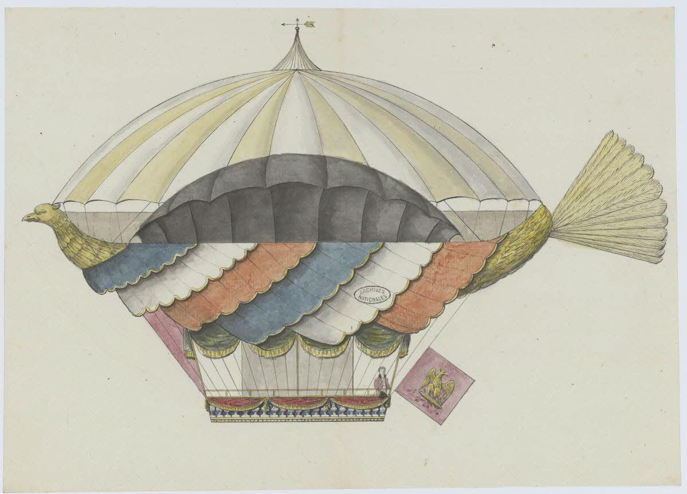

The word project comes from the Latin word projectum from the Latin verb proicere, "before an action" which in turn comes from pro-, which denotes precedence, something that comes before something else in time (paralleling the Greek πρό) and iacere, "to do". The word "project" thus originally meant "before an action".
When the English language initially adopted the word, it referred to a plan of something, not to the act of actually carrying this plan out. Something performed in accordance with a project became known as an "object". Every project has certain phases of development.
 Projet de machine aérostatique, par l’ingénieur Lelièvre
Projet de machine aérostatique, par l’ingénieur LelièvreProjet de machine aérostatique, par l’ingénieur Lelièvre.